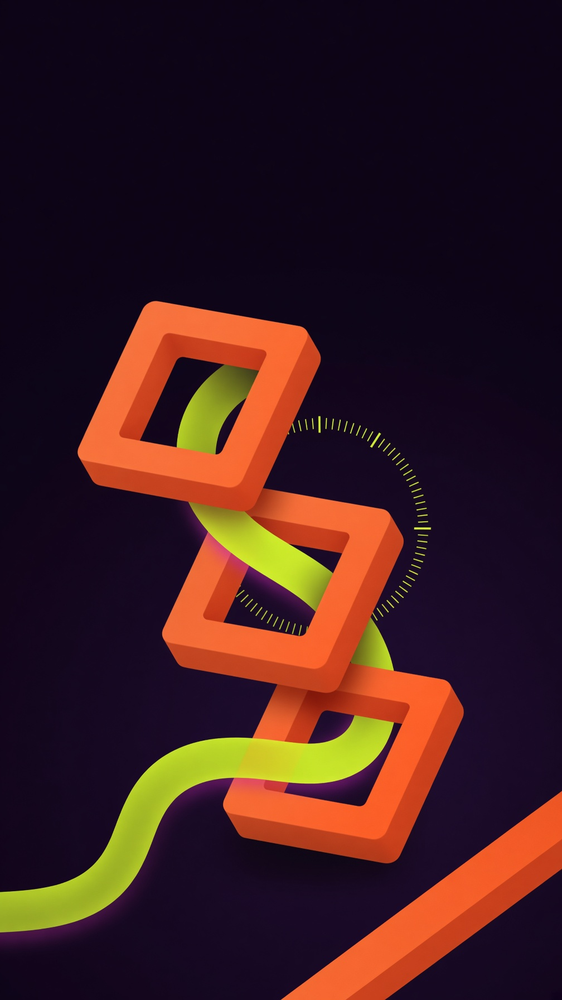
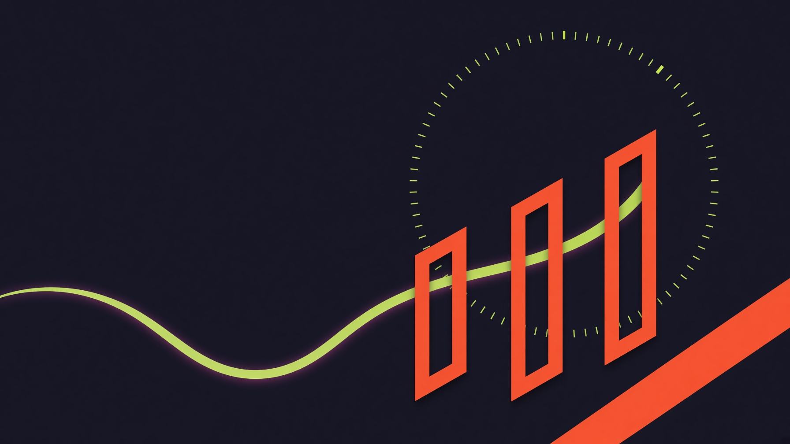
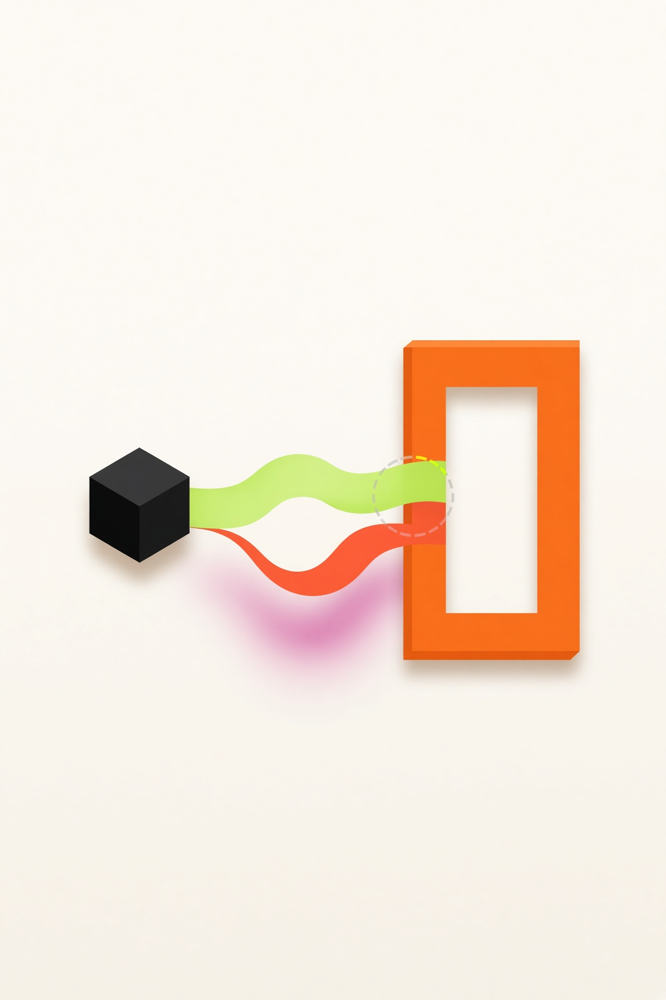
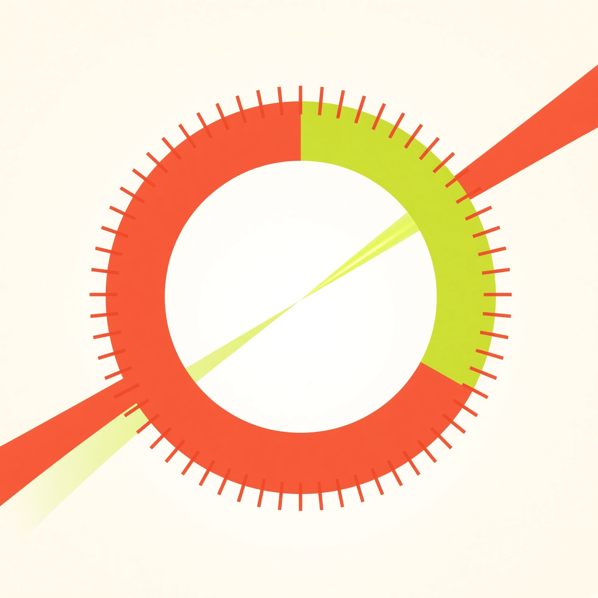
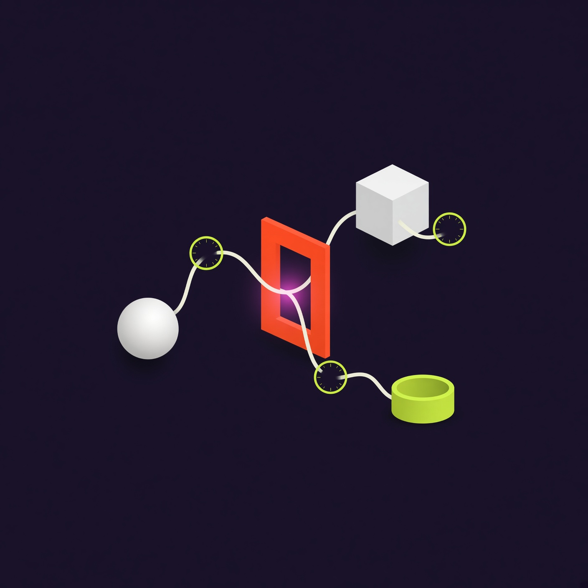

Open-source protocol
MinuteGate
MinuteGate is an open-source protocol for per-minute, gated access. FanParking.Space and AIParking are the first applications built on it.
Sandbox only; no real money moves.


Protocol flow
How it works
Three steps from a gated request to a paid session. Version 0.1 accepts one payment method, the payment provider's sandbox. Other methods are planned for a later version.
-
Ask for access
An automated client requests a gated resource. The call carries the context your gateway needs to quote time.
-
Receive terms
The server answers 402 with the amount, how it was priced, a single-use reference and the accepted payment methods.
-
Run the session
The client pays in the payment provider's sandbox and retries with the proof header. Before granting access, the server looks up the order with the payment provider itself. In version 0.1 the client pays up front.

Request and response shape
Keep hosts, amounts, and keys in sandbox placeholders until your gateway is wired.
# sandbox example
GET https://api.example.test/v1/resource
402 Payment Required
{
"minutegate": "0.1",
"amount": "1.00",
"currency": "USD",
"rate": { "unit": "session", "price": "1.00", "quantity": 1 },
"reference": "mg_3q9X1kQp0bW7cT2s",
"expiresAt": "2026-11-02T12:30:00.000Z",
"methods": ["paypal-sandbox"],
"proofHeader": "minutegate-payment"
}Metering
Per-minute pricing
Bill by the minute, not by the month. You publish a rate; clients consume time in one-minute increments while a session stays open.
A tick on the meter marks each elapsed minute. In version 0.1 each session is paid up front; settling totals when the session ends is planned for a later version. No flat monthly gate for short agent jobs.


Machine clients
Agents
Machine clients can pay per minute over HTTP. MinuteGate targets agents, workers, and scripts that need short, metered access without a human-facing flow.
Gateways expose the same protocol to bots and services. You keep policy in your stack; MinuteGate stays a thin access layer.
Get started
Quickstart
Step-by-step install, mock mode, and sandbox flows from the repository quickstart.